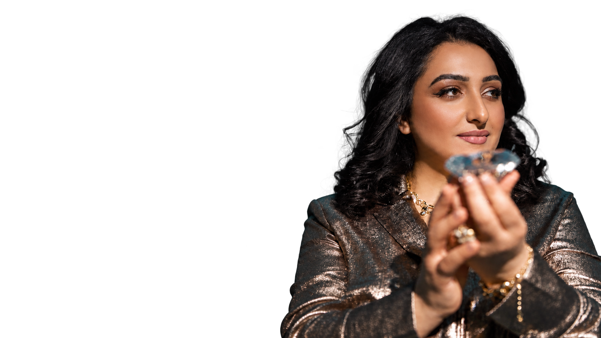
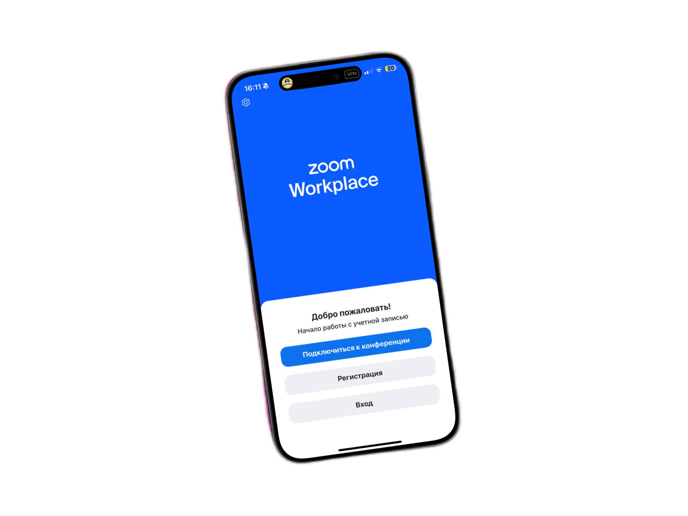
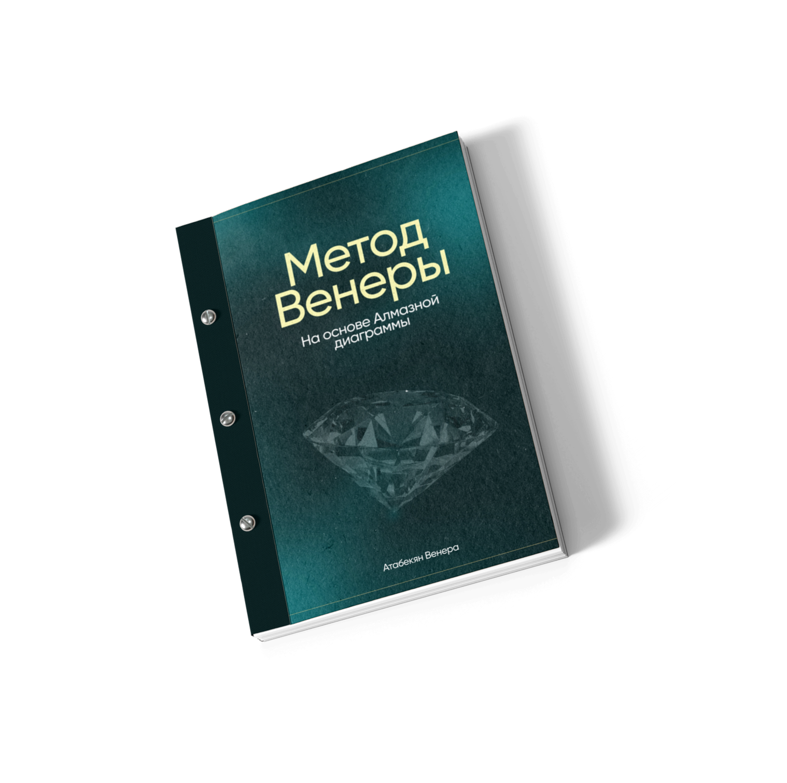
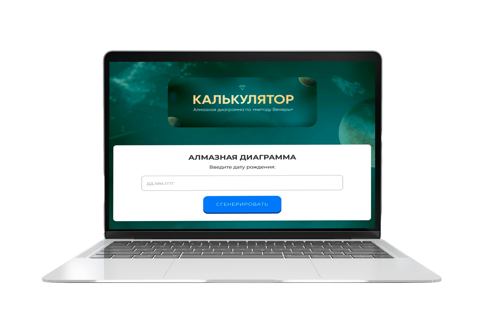
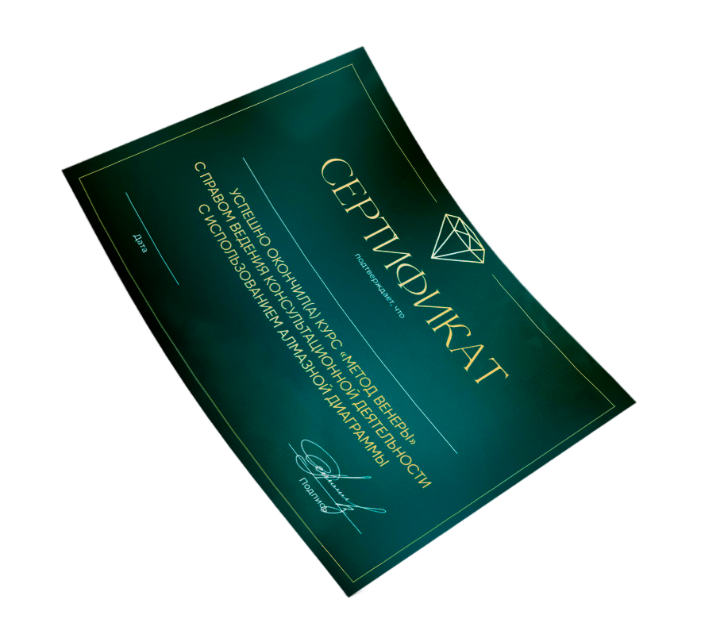

Авторская методика зарегистрирована и защищена в Российской Федерации.

Авторский метод Венеры Атабекян · 150+ кодов · 400+ связок
Алмазная
Диаграмма
Самый глубокий метод в нумерологии
и цифровой психологии
По дате рождения метод показывает причинно-следственные связи в судьбе человека: почему повторяются проблемы, где искать корень тяжёлых сценариев и к чему ведут решения, которые человек принимает сейчас.
Метод используется и в прогностике — от личных событий до мировых процессов.
Для практикующих специалистов и тех, кто начинает с нуля.
150+основных кодов
400+авторских связок
Статус метода
Официальное и профессиональное признание
Признание согласно Бернской конвенции.
AWARDS
Лауреат в номинации «Самый глубокий метод в цифровой психологии».
Собственная методология система расчётов учебная база профессиональное обучение
02
Пространство исследования
Когда одной трактовки
уже мало
Есть вопросы, которые выходят за рамки обычной трактовки даты рождения. Выберите свой — и узнайте, что исследует метод.
01Почему возникло тяжёлое заболевание?
Какой урок мог остаться непройденным, как он связан с кодами здоровья и что можно изменить, чтобы не усиливать этот сценарий дальше.
02Почему произошла трагедия?
Какие коды и связки проявились до события, что привело именно к такой точке и какие закономерности были заложены раньше.
03Куда пропал человек и что могло с ним произойти?
Метод не рекомендуется использовать для поиска пропавших: к тому, что может открыться, готовы не все. Но в практике были случаи, когда через Диаграмму удавалось найти человека.
04Почему ребёнок пришёл именно с такой судьбой или диагнозом?
Что показывает его Диаграмма, какие задачи связаны с родителями и какие родовые программы проявились через ребёнка.
05Почему отношения снова приводят в одну точку?
Почему появляются именно такие партнёры, какой сценарий повторяется и какие уроки важно пройти для близости и роста.
06Какие родовые задачи достались мне от предков?
Что пришло по материнской и отцовской линии и где находится родовой ресурс для денег, реализации и семьи.
07Что будет, если я приму это решение?
Какие варианты развития событий открываются дальше — в личной прогностике и исследовании процессов мирового масштаба.
08Кто я, зачем я здесь и почему не на своём месте?
Как раскрывается тройной код миссии, какие этапы предназначения уже пройдены и где человек мог свернуть с маршрута.
09Где мои деньги?
Что связано с финансовым потоком, почему доход упирается в потолок, деньги уходят или реализация годами не складывается.
Важно
В вопросах здоровья Алмазная Диаграмма используется как инструмент исследования жизненных сценариев и не заменяет медицинскую диагностику и лечение.
Вопрос может начаться с денег, отношений или здоровья — а причина оказаться совсем в другой части Диаграммы.
03
Метод в действии
Посмотрите, как метод отвечает на сложные вопросы
На примерах известных людей и резонансных событий видно, как читаются коды, связи и повторяющиеся сценарии.
15судеб
Расследование 0115 экстрасенсов.
15 экстрасенсов.
Одна судьба?
Почему многие участники «Битвы экстрасенсов» уходят из жизни раньше времени? Повторяющиеся сочетания кодов в судьбах участников проекта.
Смотреть расследование ↗111лет спустя
Расследование 02«Титан» и «Титаник».
«Титан» и «Титаник».
Что повторилось?
Даты участников, родовые связи и повторяющиеся сценарии вокруг двух трагедий, разделённых 111 годами.
Смотреть расследование ↗3события
Расследование 03Беслан. «Крокус».
Беслан. «Крокус».
11 сентября.
Коды участников и событий, повторяющиеся закономерности и возможности Алмазной Диаграммы в прогностике.
Смотреть расследование ↗04
Глубина метода
Ответ собирается из всей конструкции
Здесь недостаточно знать значение одного числа. Важно, где стоит код, что находится рядом и какие связи образует вся Диаграмма.
Кодов и авторских трактовок
База сформирована более чем на 3000 консультаций и постоянно уточняется.
Связок
Одна энергия в разных сочетаниях может давать совершенно разные сценарии.
Сфер жизни
Личность, духовность, реализация, карма и отношения, здоровье.
Два сквозных пути
Соединяют карму, род и прошлый опыт с дальнейшим сценарием.
Чакр
Краткий и глубокий анализ добавляет уровень чтения под конкретный запрос.
Одинаковая дата — не одинаковая судьба
Всё решает конфигурация: зоны, соседние коды, партнёр, родители, детство и цель исследования.
Один код сам по себе ещё не даёт ответа.
Ответ появляется, когда складывается вся Диаграмма.
05
Кому подходит
Особенно тем, кому уже тесно в рамках одного направления
Вы прошли 3, 5, 8 или 10 школ
Знаний много, а целостной картины своей жизни всё ещё нет.
Вы уже работаете с людьми
И хотите видеть больше связей в запросе клиента и глубже понимать причины.
Вы чувствуете в себе дар
Хотите понять, как потенциал проявляется именно в вашей судьбе и куда его направлять.
Ответы закончились раньше вопросов
Вы многое знаете о себе, но сценарии всё ещё повторяются.
Вы начинаете с нуля
Знание нумерологии не требуется: метод изучается последовательно.
Голоса учеников
Что меняется после обучения
«На обучении впервые увидела, насколько по-разному один и тот же код проявляется в зависимости от его места и связок в Диаграмме».
Ученица школы · несколько систем за плечами
«После обучения стала видеть в запросах клиентов связи, которые раньше просто не замечала. Разборы стали глубже».
Практикующий специалист
«То, что раньше существовало отдельными знаниями, наконец стало соединяться между собой в общую картину».
Ученица школы · психология и коучинг
Что вы сможете после обучения
Одна дата.
Сотни связей.
За 2,5 месяца на профессиональном уровне — от чтения кодов до разбора конкретного запроса. Для себя, семьи, а после сертификации — для клиентов.
Находить корень-причину сложной ситуации
Понимать, почему это произошло именно сейчас, откуда начался сценарий, что продолжает его поддерживать и к чему он ведёт дальше.
Исследовать запросы по здоровью
Смотреть, с какими жизненными уроками, родовыми программами, отношениями с родителями, детством и травмами в рамках метода связан запрос по здоровью. Путь здоровья в Диаграмме может вести от кармы здоровья к роду, родителям и детству. Метод не заменяет медицинскую диагностику и лечение.
Понимать задачи ребёнка и родителей
Какие задачи связывают ребёнка и родителей, что проявляется через род и какой смысл эта история имеет в общей картине семьи.
Разбирать личную трагедию и событие мирового масштаба
Собирать в одну картину коды события, участников и обстоятельств и исследовать, почему всё пришло именно к такой точке.
Видеть, куда ведёт ситуация
Работать с ветками вероятности: что может произойти при текущем сценарии, как на него влияют решения человека и в какой точке направление ещё можно изменить.
Понимать повторяющиеся сценарии отношений
Почему человек встречает именно таких партнёров, какие уроки запускаются в паре, что мешает отношениям и что важно пройти для близости, развития и счастья.
Находить своё настоящее предназначение
Видеть предназначение шире профессии: зачем человек пришёл, какие этапы миссии ему предстоит пройти и через какие профессии, проекты и формы реализации она может раскрыться.
Понимать, где ваши деньги
Разбирать денежную карму, реализацию, профессию, внутренние ограничения и ресурсы рода — и видеть, что мешает деньгам приходить, расти или оставаться.
Читать задачи и ресурсы рода
Понимать, что досталось от предков по материнской и отцовской линиям, какие программы продолжаются через поколения и где находится ресурс рода для денег, реализации, отношений и семьи.
Видеть связи между скрытыми сценариями
Детские травмы, родительские программы, кризисные точки, фатальные погрешности, скрытые способности и повторяющиеся сценарии — и связи между ними.
Почему это произошло? Откуда началось? С чем связано? Какой урок здесь заложен? Куда всё идёт дальше?
Выбрать формат обучения →06
Обучение
Научитесь видеть
систему самостоятельно
Выберите уровень, на котором хотите освоить метод. Обучение проходит онлайн на GetCourse, с живыми созвонами, практикой и обратной связью. Материалы доступны 1 год.
Выбрать формат ↓



Программа «Новичок»Фундамент методаПрограммаСвернуть+
- Личность
- Духовность
- Реализация
- Карма и отношения
- Здоровье
- Центр силы
- Фатальная погрешность прошлой жизни
- Родовые каналы
Профессиональный уровеньПолная программа обученияПрограммаСвернуть+
- Фатальная погрешность жизни
- Тройной код миссии
- Чтение кодов и их связок
- Пути Z
- Родовые каналы и эгрегоры
- Путь W
- Совместимость
- Прогнозирование
- Карма здоровья
- Вулканические коды
- Вселенский ключ
- Бонус от Вселенной
- Карма прошлой жизни с уточнениями
- Денежная карма
- Буферные коды
- Чакральный анализ — краткий и глубокий
- Коды помощи и помехи к желанию сердца и души
- Практика
Для себя и семьи · 1,5 месяца
Новичок
Фундамент Алмазной Диаграммы и основные сферы жизни.
- 3 групповых созвона с Венерой
- Обратная связь по заданиям от куратора
- GetCourse · материалы на 1 год
- Сертификат об окончании — без права консультирования
Программа и ограничения
- Личность
- Духовность
- Реализация
- Карма и отношения
- Здоровье
- Центр силы
- Фатальная погрешность прошлой жизни
- Родовые каналы
Печатный учебник, сайт-калькулятор и профессиональное комьюнити мастеров не входят в тариф.
Профессиональная практика · 2,5 месяца
Эксперт
Полная Диаграмма: от предназначения и отношений до рода и прогностики.
- 5 групповых созвонов с Венерой
- Общий чат с Венерой
- Еженедельные разборы с куратором и обратная связь
- Сайт-калькулятор
- GetCourse · материалы на 1 год
После успешной защиты экзамена
- Сертификат с правом консультирования
- Печатный учебник в подарок: 150+ кодов и авторские трактовки
- Доступ в комьюнити мастеров с поддержкой без ограничения по времени
Комбо4 месяца · 230 000 ₽УсловияСвернуть+
Полный путь с нуля: сначала «Новичок» — 1,5 месяца, затем «Эксперт» — 2,5 месяца. Материалы открываются поэтапно.
- Вся программа двух уровней
- Живые созвоны с Венерой, практика и куратор
- Сайт-калькулятор · материалы на 1 год
- После защиты экзамена: сертификат с правом консультирования, учебник в подарок и бессрочная поддержка в комьюнити
Оформляется только после согласования с поддержкой. Уточним подготовку и формат старта, затем откроем оплату. Доступна банковская рассрочка.
Согласовать «Комбо» ↗Семейное обучениеСпециальные условия для мужа и женыУсловияСвернуть+
Если обучение одновременно проходят муж и жена, одному из участников могут быть предоставлены специальные условия. Формат и оплата открываются после согласования с поддержкой. Доступна банковская рассрочка.
Согласовать семейное обучение ↗VIP · личное сопровождениеС Венерой · 359 990 ₽УсловияСвернуть+
2,5 месяца. Полная профессиональная программа и всё наполнение «Эксперта».
- Личный VIP-чат с Венерой на протяжении обучения
- 8 личных созвонов
- Разбор вашей Диаграммы, личных ситуаций и клиентских кейсов
- GetCourse · доступ на 1 год
- После защиты экзамена: сертификат с правом консультирования, печатный учебник в подарок и бессрочная поддержка комьюнити
Опыт учеников
Есть с чем сравнить
Годы практики, несколько школ и работа с клиентами — ученики рассказывают о своём опыте. Нажмите на видео, чтобы посмотреть отзыв прямо здесь.
Посмотреть все отзывы →Начать знакомство
Ваш первый шаг
в Алмазную Диаграмму
Освойте часть метода, разберите семейную историю или посмотрите исследования реальных судеб.
Тройной код миссии
Рассчитайте свою миссию и поймите, где вы находитесь на своём маршруте.
Как проходит и что останется с вами
Венера передаёт отдельную часть метода для самостоятельной работы. Вы рассчитаете Тройной код миссии: что уже пройдено, какой этап проживаете сейчас и что открывается дальше.
На закрытой живой онлайн-встрече Венера объясняет расчёты и нюансы чтения, разбирает вопросы и помогает собрать значения в единую картину.
- Рассчитанный Тройной код миссии
- Понимание трёх этапов пути
- Связь миссии с деньгами, реализацией, профессией и решениями
- Навык для самостоятельной работы
Подходит для первого знакомства и для практикующих специалистов.
Великая перезагрузка рода
Исследуйте повторяющиеся истории своей семьи на живых групповых разборах Венеры.
Формат и программа интенсива
Исследуем сценарии через поколения, материнскую и отцовскую линии и проявление родовых программ сегодня. Венера разбирает реальные ситуации участников, показывает коды и связи внутри рода.
- Отношения с родителями и влияние детства
- Повторяющиеся семейные истории и задачи поколений
- Родовые программы и ресурсы
- 3 живые встречи с Венерой
- Проверка личных кодов
- Поддержка куратора в Telegram
Встречи проходят в прямом эфире и не записываются.
Живая библиотека методаБаза разборовРеальные судьбы, семейные истории и события — через призму Диаграммы.Посмотреть разборыСвернуть описание↗
На судьбах людей, семейных историях, отношениях и событиях мирового масштаба Венера показывает предысторию, повторяющиеся сценарии, развилки и варианты продолжения.
В рамках метода матрица событий и симуляция Вселенной описывают взаимосвязи человека, рода, других людей и обстоятельств. Это не утверждение о научной модели устройства мира.
- Как проявляются 150+ кодов и 400+ связок
- Почему одинаковые коды дают разные события
- Как значение меняется в зависимости от зоны и окружения
- Как несколько Диаграмм соединяются внутри одной истории
Особенно полезно практикующим специалистам: видны связи, которые легко пропустить, и вопросы, которые стоит задать дальше.
В базе: Беслан, «Крокус», 11 сентября, семья Усольцевых, участники «Битвы экстрасенсов», Лерчек, Михаил Ефремов, Джон Кеннеди, Авраам Линкольн, Бритни Спирс, Джордж Стинни, обычные люди и запросы аудитории. База постоянно пополняется.
Начните с трёх бесплатных расследований →Вся база · 5 555 ₽
3 месяца. Все опубликованные разборы и новые материалы в период доступа.
Получить доступ ко всей базе ↗Индивидуальный запрос
Есть вопрос к своей жизни?
Исследуйте его через Диаграмму
Выберите глубину и формат разбора. Обучение остаётся главным способом освоить систему самостоятельно.
Вопросы об обучении
Перед тем, как начать
Тарифы, сертификаты, доступ к материалам и другие важные подробности.
Ваш следующий шаг
С вашей даты
начинается история.
150+ кодов · 400+ связок · 3000+ консультаций